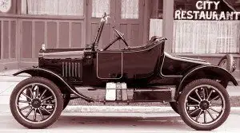
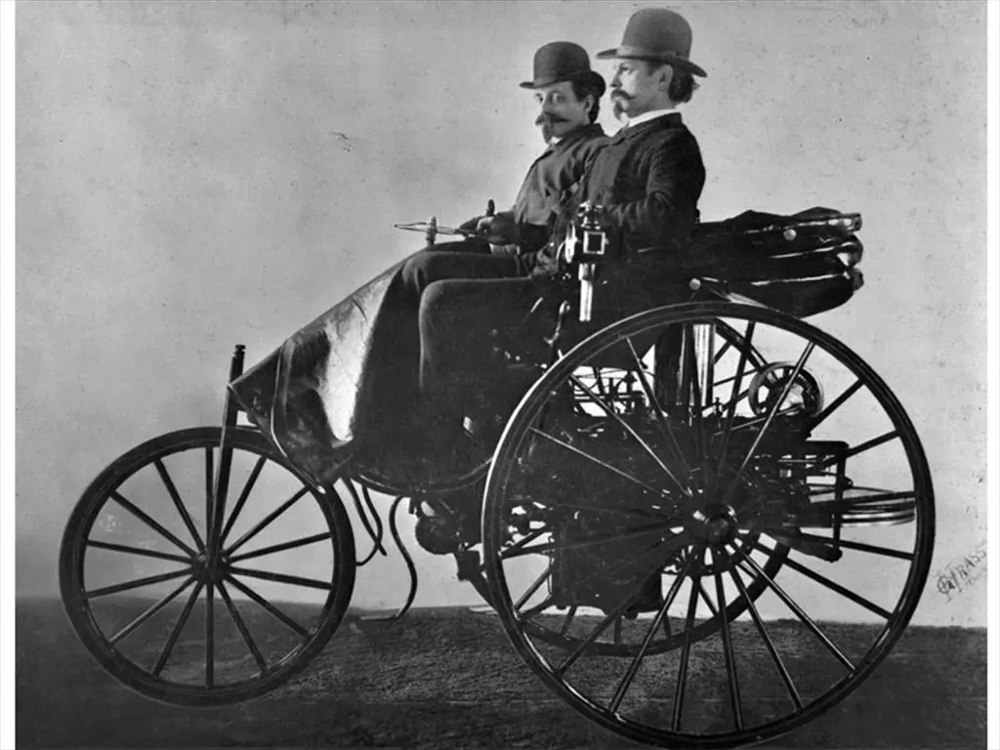
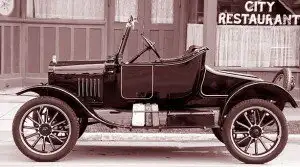
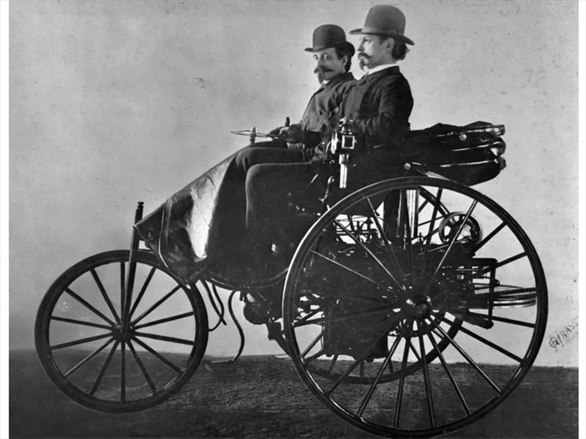

Welcome to my website.I hereby present diffrent car models
that are made by different brands but it will help anyone to better
understand the diversity that is there in different machine models
and their consequent difference in pricing.When you think of the very first car,
what do you imagine? Maybe a car made out of tree branches with stone wheels,
powered by Fred Flintstone’s feet? Or a quaint little buggy with thin, oversized tires
driven by a man wearing a top hat?
What did the very first cars look like, and how have they changed over the years?
They’re probably a little different than you’d think!well,machines are good because they
make our work easier and everyone should aspire to have atleast one at one point of their lifetime.
To begin with a car general performance detrmines how much it will sell at among other factors such
as :the size of the engine,the pysical outlook size and
the various interior modifications of the car
Steam and Electricity power the earliest vehicles
You may be surprised to find electric vehicles aren’t a new concept. The first automobiles
actually ran on steam and electricity. You may also be surprised to learn the first vehicles
were developed in the late 1700s.
Those first “vehicles” were powered by steam. It was an energy source that had been used for
many years to power trains. However, it wasn’t until the 1870s that steam power became more
practical for small vehicles. Despite improvements, there were still a lot of shortcomings.
Steam-powered vehicles took a very long time to start up and the range was limited.
In the early 1800s, inventors around the world began building electric-powered buggies.
A few decades later inventors in England and France created vehicles that were much closer
to modern-day EVs. In 1890, William Morrison built the first electric car in the U.S.
The car could go 14 miles per hour and fit six people. It was very rudimentary, but it
got interest going in America.
Within 10 years a third of the vehicles in the U.S. were electric. Electric vehicles were
popular because they weren’t as difficult to start as steam and gas combustion engines and
operation didn’t involve difficult gear shifts. Like today, the first EVs were quiet and didn’t
emit smelly air pollution.
Meanwhile, in 1898, Ferdinand Porsche did something revolutionary. He created the first hybrid
vehicle that was powered by electricity and gas. It was a blueprint for the hybrids that would
be built more than 100 years later.
Mass Produced Gas-Powered Cars Corner the Market (1890s-1930s)
Mass produced gas-powered cars corner the world
While some of the very first cars were powered by steam engines, dating back to the 1700s,
it was Karl Benz in 1885 who invented the first gas-powered car, which he later received
a patent for in 1886. Benz’s first car had three wheels, looked much like an elongated
tricycle and sat two people. Four-wheeled gas-powered cars were later introduced in 1891.
The invention of the gas-powered automobile marked the beginning of the vehicular evolution in America.
The first cars didn’t have windshields, doors, turn signals, or even a round steering wheel – a far cry
from what we’ve become accustomed to. It can be said that Karl Benz’s first gas-powered car was the major
catalyst for the production of modern automobiles, as many automakers followed in his footsteps,
trying to create their own version of a car.
At the time electric vehicles were on their way to being the norm. But there was one problem with early
electric vehicles. People were interested in owning them, but the elaborate
machines were too expensive for the middle class.
It wasn’t until Henry Ford’s 1908 Model T that automobiles started to resemble what we’re familiar with today.
Thanks to Ford’s invention of the assembly line, the gas-powered Model T could be mass-produced and became
affordable for the general population.
Ford had been working with Thomas Edison to create a better battery for electric vehicles, but the success of
the affordable Model T halted the progress. Another factor was the invention of the electric starter in 1912.
It eliminated the need to hand-crank gas-powered vehicles. Once oil was discovered in Texas and gasoline
became cheap gas-powered vehicle sales began to surge.
Today the opposite is true. The high cost of gasoline and pollution concerns have helped electric vehicles
make a comeback. And Edison would be happy to know that the latest EVs have batteries that will go up to
400+ miles.
 


